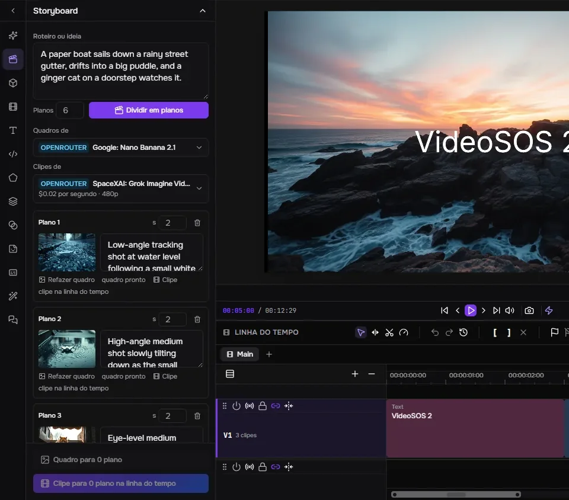
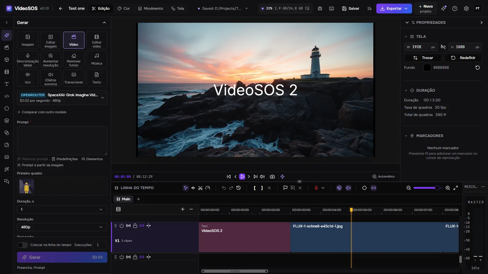
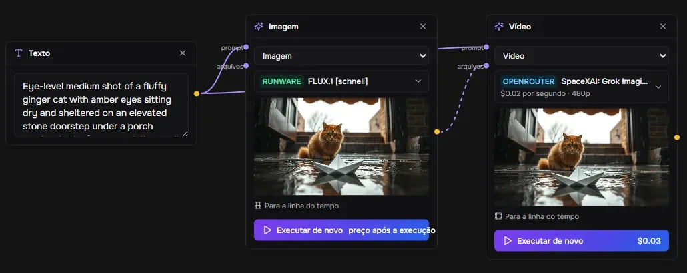
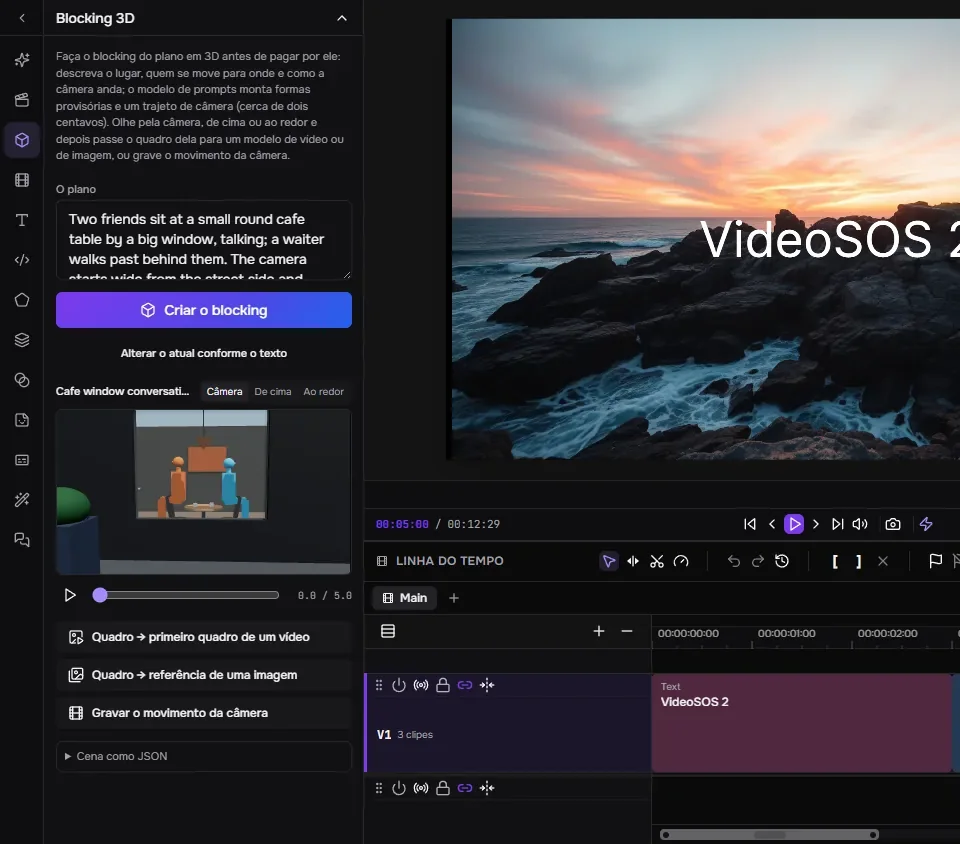
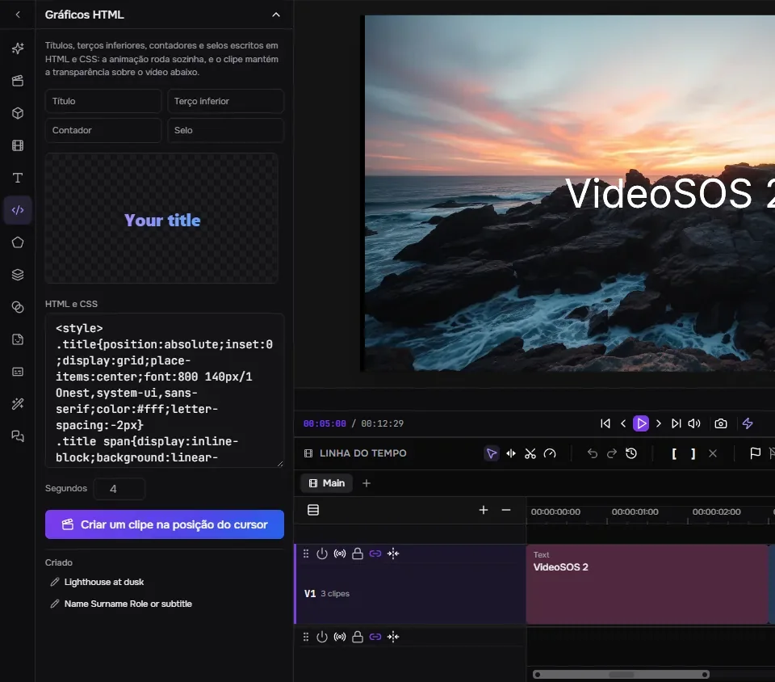
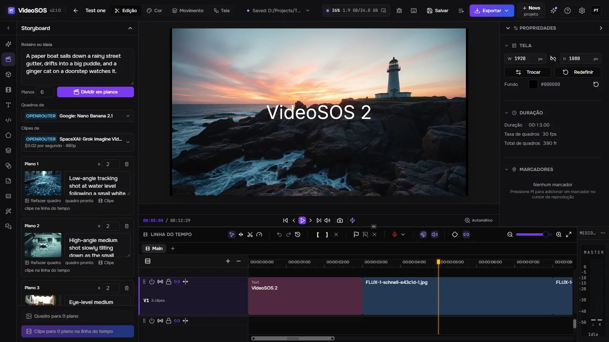
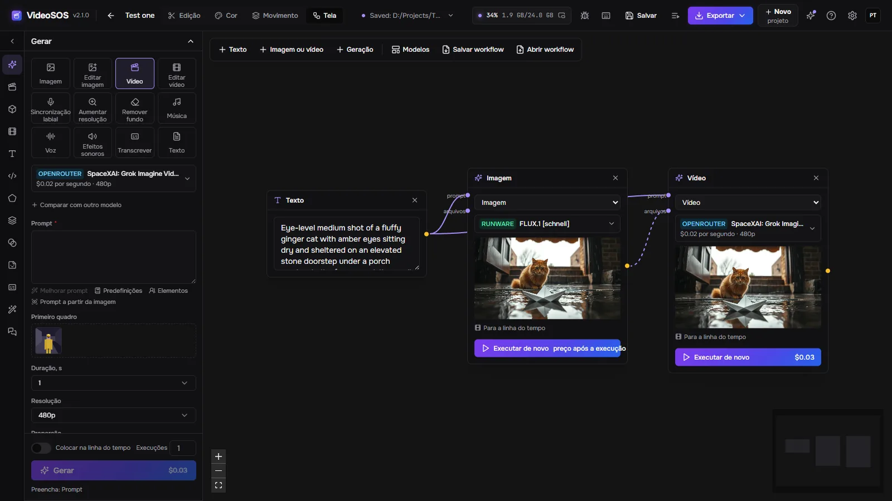
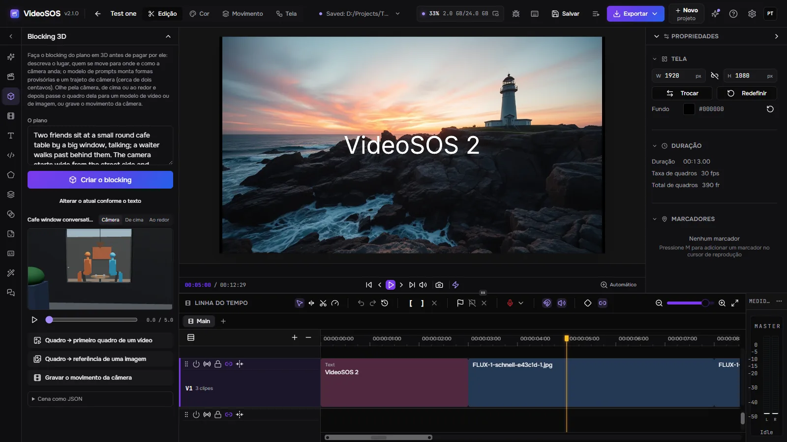
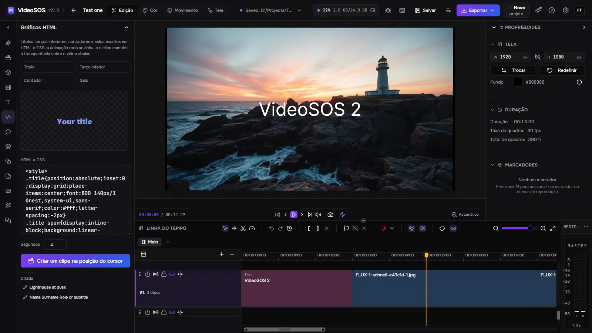

Storyboard

Um modelo de linguagem divide um roteiro em planos; cada plano recebe um quadro de um modelo de imagem e um clipe de um modelo de vídeo que começa nesse quadro, e os clipes entram na linha do tempo um após o outro.
O VideoSOS coloca os melhores modelos de imagem, vídeo, música e voz de OpenRouter, fal e Runware ao lado de um editor multitrilha de verdade. Planeje o filme em um storyboard, em uma tela de nós e em um blocking 3D, gere cada plano com suas próprias chaves pelo preço mostrado antes de executar e edite tudo em um vídeo pronto — ou deixe um agente de IA fazer isso com você.
Windows 10/11, Linux (experimental) e macOS em Apple Silicon (experimental). É preciso uma placa de vídeo com WebGPU para a prévia e a exportação. A geração exige uma chave de OpenRouter, fal ou Runware — você paga diretamente ao provedor.

Geração, planejamento e edição em um só programa, com seus arquivos no seu disco.

Um modelo de linguagem divide um roteiro em planos; cada plano recebe um quadro de um modelo de imagem e um clipe de um modelo de vídeo que começa nesse quadro, e os clipes entram na linha do tempo um após o outro.

Texto, imagens, vídeos e gerações são nós ligados pelo que passam adiante.

Descreva o plano e um modelo de linguagem o monta com formas provisórias, pessoas em pé e sentadas, seus movimentos e o trajeto da câmera.

Títulos, terços inferiores, contadores e selos em HTML e CSS, com prévia ao vivo, transformados em um clipe com transparência que fica sobre o vídeo na posição do cursor de reprodução.
Doze tarefas: imagens, edições, vídeo a partir de texto ou de um quadro, edição de vídeo, sincronização labial, upscale, remoção de fundo, música, vozes, efeitos sonoros, transcrições e textos — mais de mil modelos de OpenRouter, fal e Runware, lidos ao vivo dos provedores.
O formulário é montado a partir da descrição do próprio modelo e o preço é calculado com base nela antes de você apertar Gerar; depois da execução, a cobrança do próprio provedor é registrada. Um limite diário segura os agentes.
O mesmo prompt vai para até mais dois modelos, e os resultados ficam lado a lado com seus preços.
Um personagem, um objeto ou um lugar guardado sob um nome com suas imagens: @nome em um prompt os envia ao modelo, e o mesmo rosto volta plano após plano.
Uma execução é desenhada na linha do tempo no lugar onde vai cair enquanto roda; uma parte de qualquer clipe é gerada de novo no mesmo lugar; o clipe seguinte continua a partir do último quadro do anterior.
Várias trilhas de vídeo e de áudio, cortes ripple, rolling, slip e slide, transições, quadros-chave com gráfico de Bézier, máscaras, modos de mesclagem, correção de cor com scopes, texto, formas e legendas. Exportação rápida para MP4, WebM, MOV ou MKV na placa de vídeo, ou FCPXML para Final Cut, DaVinci Resolve e Premiere.
Conecte Claude Code, Claude Desktop, Cursor ou Codex e o agente faz o que a janela faz: escolhe modelos, estima preços, gera, edita a linha do tempo passo a passo, faz o blocking de planos em 3D, cria gráficos e exporta. A linha do tempo é guardada antes de cada edição do agente, uma edição pode ser ensaiada antes, e você pode pedir para aceitar cada uma pessoalmente.
Um modelo de OpenRouter à sua escolha opera o programa com as mesmas ferramentas, passo a passo, com o custo de cada passo e um botão Parar.
Um link do YouTube, qualquer site que o yt-dlp conheça ou um arquivo direto entra na biblioteca com progresso, cancelamento e retomada.
Nenhuma conta nossa: você paga diretamente aos provedores. Projetos e gerações são arquivos comuns no seu disco; um trabalho é salvo antes de ser enviado e nunca é pago duas vezes, e os resultados são baixados antes que os links dos provedores expirem.
Inglês, russo, alemão, espanhol, francês, japonês, coreano, português do Brasil, turco e chinês, incluindo os efeitos e seus parâmetros.
Um proxy para os provedores e os downloads, e acesso pela rede: um navegador em outro computador ou em um celular abre a mesma interface com uma chave de acesso enquanto tudo roda aqui.
O próprio programa, no seu idioma.




Sim. O VideoSOS é gratuito e de código aberto (MIT). A geração é paga aos provedores com suas próprias chaves; a edição e a exportação não custam nada.
Conosco, não. Você precisa de uma chave de pelo menos um provedor — OpenRouter, fal ou Runware — e paga a ele diretamente; o VideoSOS nunca vê o seu dinheiro e nunca mostra as suas chaves aos agentes.
Depende do modelo: o formulário de geração mostra o preço antes de cada execução, de frações de centavo por uma imagem rápida a dólares por um vídeo longo, e o histórico guarda quanto custou cada execução. Um storyboard aprova quadros baratos antes dos clipes pagos.
Apenas o que uma geração precisa vai para o provedor que você escolheu. Projetos, mídia e resultados ficam no seu disco; as estatísticas anônimas ficam desativadas, a menos que você as ative, e nunca incluem prompts, arquivos ou chaves.
Windows 10 e 11 x64; Linux x86-64 e macOS em Apple Silicon como versões experimentais. Uma placa de vídeo com WebGPU executa a prévia e a exportação.
Conecte Claude Code, Claude Desktop, Cursor ou Codex e o agente faz o que a janela faz: escolhe modelos, estima preços, gera, edita a linha do tempo passo a passo, faz o blocking de planos em 3D, cria gráficos e exporta. A linha do tempo é guardada antes de cada edição do agente, uma edição pode ser ensaiada antes, e você pode pedir para aceitar cada uma pessoalmente.
claude mcp add --transport http videosos http://127.0.0.1:8796/mcp
Uma casca Tauri executa o servidor Rust no mesmo processo; a janela é um fork do editor FreeCut com o painel de geração, o storyboard, a tela, o blocking 3D e a ponte do agente adicionados. Os trabalhos ficam no SQLite e os arquivos, no seu disco.
React window (FreeCut fork) ─┐
├─ VideoSOS.exe (Tauri shell + Rust/axum server inside)
Rust axum server ────────────┘ │
├─ OpenRouter · fal · Runware (your keys)
└─ MCP http://127.0.0.1:8796/mcp